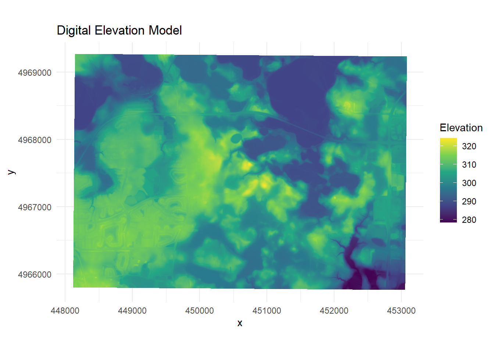

Section 10 Mapping
Most data in this project is collected across the Minnesota Landscape Arboretum and Lake Rebecca Park Reserve, so mapping is focoused there.
10.1 Creating DEMs (and other rasters) from MN LiDAR data
Technical resources
sf manual: https://cran.r-project.org/web/packages/sf/sf.pdf
lidR manual: https://r-lidar.github.io/lidRbook/
shapefiles manual: https://cran.r-project.org/web/packages/shapefiles/shapefiles.pdf
MNtopo https://files.dnr.state.mn.us/aboutdnr/gis/mntopo/mntopo_help_document.pdf
EPSG info: https://www.nceas.ucsb.edu/sites/default/files/2020-04/OverviewCoordinateReferenceSystems.pdf
SF: https://r-spatial.github.io/sf/articles/sf1.html#reading-and-writing
Elevation, slope, and curvature can be extracted from Minnesota LiDAR data found at MNTopo (http://arcgis.dnr.state.mn.us/maps/mntopo/). The raw LiDAR data can be downloaded directly from the website. LiDAR data is in NAD83 w/ elevation in meters.
# load laz fliles from arb (in NAD83). filter for only ground-classified points (-keep_class 2)
arb_las1 <- readLAS("G:/My Drive/_data/_mapping/_arb_topo/_lidar/4342-05-13.laz", filter = "-keep_class 2")
arb_las2 <- readLAS("G:/My Drive/_data/_mapping/_arb_topo/_lidar/4342-05-12.laz", filter = "-keep_class 2")
# load laz files from lr
lr_las1 <- readLAS("G:/My Drive/_data/_mapping/_lake_rebecca_topo/_lidar/3542-30-08.laz", filter = "-keep_class 2")
lr_las2 <- readLAS("G:/My Drive/_data/_mapping/_lake_rebecca_topo/_lidar/3542-30-09.laz", filter = "-keep_class 2")
lr_las3 <- readLAS("G:/My Drive/_data/_mapping/_lake_rebecca_topo/_lidar/3542-31-08.laz", filter = "-keep_class 2")
lr_las4 <- readLAS("G:/My Drive/_data/_mapping/_lake_rebecca_topo/_lidar/3542-31-09.laz", filter = "-keep_class 2")Transform coordinate reference system to NAD83 zone 15N (ESPG 26915). Fit a digital terrain model to the data using the triangular irregular network algorithm (not as computationally intense, default settings). Terrain function (https://www.rdocumentation.org/packages/raster/versions/3.6-32/topics/terrain)
# transform to NAD83 zone 15N (ESPG 26915)
epsg(arb_las1) # report the current coordinate system
st_crs(arb_las1) <- 26915 # set to NAD83 zone 15N
st_crs(arb_las2) <- 26915
st_crs(lr_las1) <- 26915
st_crs(lr_las2) <- 26915
st_crs(lr_las3) <- 26915
st_crs(lr_las4) <- 26915
# fit DEM using triangular irregular network, this is similar to LAStools stuff too
arb_dem1 <- rasterize_terrain(arb_las1, res = 1, algorithm = tin())
arb_dem2 <- rasterize_terrain(arb_las2, res = 1, algorithm = tin())
lr_dem1 <- rasterize_terrain(lr_las1, res = 1, algorithm = tin())
lr_dem2 <- rasterize_terrain(lr_las2, res = 1, algorithm = tin())
lr_dem3 <- rasterize_terrain(lr_las3, res = 1, algorithm = tin())
lr_dem4 <- rasterize_terrain(lr_las4, res = 1, algorithm = tin())
# merge DEMS
arb_dem <- mosaic(arb_dem1, arb_dem2)
lr_dem <- mosaic(lr_dem1, lr_dem2, lr_dem3, lr_dem4)Create new rasters using dems for slope and curvature. Slope is in degrees. Curvature is calculated in the direction of maximum slope (profile). Positive values indicate upward covex.
# slope (in degrees)
arb_slope <- terrain(arb_dem, "slope", unit = "degrees")
lr_slope <- terrain(lr_dem, "slope", unit = "degrees")
# curvature
arb_curvature <- curvature(arb_dem, type = "profile")
lr_curvature <- curvature(lr_dem, type = "profile")Export models to G-Drive.
# arb
terra::writeRaster(arb_dem, filetype = "GTiff", filename = file.path("G:/My Drive/_data/_mapping/_arb_topo/arb_1m_dem"), overwrite=TRUE)
terra::writeRaster(arb_slope, filetype = "GTiff", filename = file.path("G:/My Drive/_data/_mapping/_arb_topo/arb_1m_slope"), overwrite=TRUE)
terra::writeRaster(arb_curvature, filetype = "GTiff", filename = file.path("G:/My Drive/_data/_mapping/_arb_topo/arb_1m_curvature"), overwrite=TRUE)
# lr
terra::writeRaster(lr_dem, filetype = "GTiff", filename = file.path("G:/My Drive/_data/_mapping/_lake_rebecca_topo/lr_1m_dem"), overwrite=TRUE)
terra::writeRaster(lr_slope, filetype = "GTiff", filename = file.path("G:/My Drive/_data/_mapping/_lake_rebecca_topo/lr_1m_slope"), overwrite=TRUE)
terra::writeRaster(lr_curvature, filetype = "GTiff", filename = file.path("G:/My Drive/_data/_mapping/_lake_rebecca_topo/lr_1m_curvature"), overwrite=TRUE)10.2 Visualzing Sites
# import data
lr_1m_dem <- rast("G:/My Drive/_data/_mapping/_lake_rebecca_topo/lr_1m_dem")
lr_1m_slope <- rast("G:/My Drive/_data/_mapping/_lake_rebecca_topo/lr_1m_slope")
lr_1m_curvature <- rast("G:/My Drive/_data/_mapping/_lake_rebecca_topo/lr_1m_curvature")
arb_1m_dem <- rast("G:/My Drive/_data/_mapping/_arb_topo/arb_1m_dem")
arb_1m_slope <- rast("G:/My Drive/_data/_mapping/_arb_topo/arb_1m_slope")
arb_1m_curvature <- rast("G:/My Drive/_data/_mapping/_arb_topo/arb_1m_curvature")# Crop the raster
# cropped_raster <- crop(arb_1m_dem, extent(c(min(arb_geo_data$latitude) + 500,
# max(arb_geo_data$latitude) + 500,
# min(arb_geo_data$longitude) + 500,
# max(arb_geo_data$longitude + 500))))
# format dem
arb_dem_map <- as.data.frame(arb_1m_dem, xy = TRUE) %>%
rename("elevation" = "Z")
ggplot(data = arb_dem_map) +
geom_tile(mapping = aes(x = x, y = y, fill = elevation)) +
scale_fill_viridis_c() +
labs(title = "Digital Elevation Model", fill = "Elevation") +
coord_equal() +
theme_minimal()